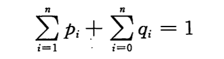
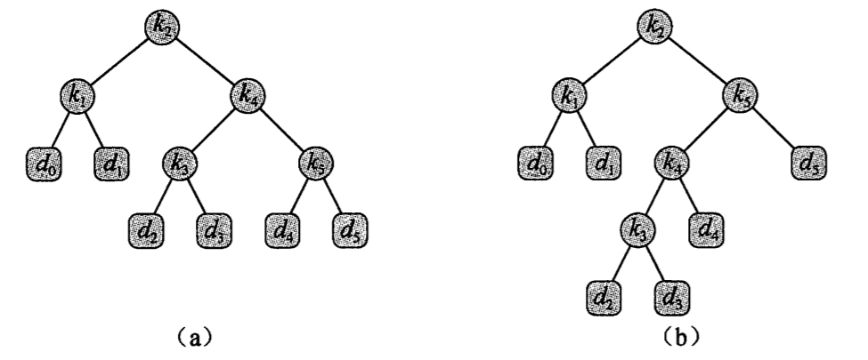
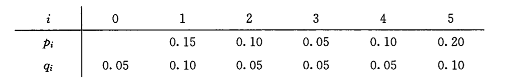
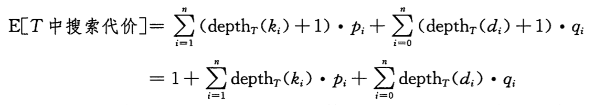
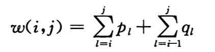
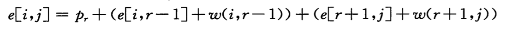
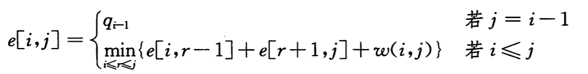

动态规划：最优二叉搜索树
*最优二叉搜索树*问题可以定义如下：给定一个 n 个不同关键字的已排序的序列 K = ，用这些关键字构造一棵二叉搜索树。每个关键字 ki，都有一个概率 pi 表示其搜索频率。有些要搜索的值可能不在 K 中，因此还有 n+1 个伪关键字 d0, d1, d2, …, dn 表示不在 K 中的值。d0 表示小于 k1 的值，dn 表示大于 kn 的值，其他的 di 表示所有在 ki 和 ki+1 之间的值。对于每个伪关键字 di，也都有一个频率 qi 表示对应的搜索频率。
下图显示了对一个 n=5 个关键字集合构造的两棵二叉搜索树，每个关键字的频率如下表所示。每个关键字 ki 是一个内部结点，而 di 是一个叶子结点。每次搜索要么成功，要么失败，所以有如下公式：

二叉搜索树（左边的树期望搜索代价为 2.80，右边的为最优二叉搜索树 2.75）：

关键字搜索概率：

由于我们知道每个关键字搜索概率，所以可以确定在一棵给定的二叉搜索树 T 中进行一次搜索的期望代价。假定一次搜索的代价等于访问的结点数，即此次搜索找到的结点在 T 中的深度再加 1。那么一次搜索的期望代价如下，第二个等式时由上文的公式推导而来：

对于一个给定的概率集合，构造一棵期望搜索代价最小的二叉搜索树，即为*最优二叉搜索树*。这个例子也显示了最优二叉搜索树不一定是高度最矮的，而且概率高的关键字也不一定为根节点。下面我们来求解最优二叉搜索树问题。
步骤 1：最优二叉搜索树的结构
二叉搜索树的最优子结构为：如果一棵最优二叉搜索树 T 有一棵包含关键字 ki, …, kj 的子树 T'，那么 T'必然是包含关键字 ki, …, kj 和伪关键字 di-1, …, dj 的子问题最优解。由最优解子结构，我们可以用子问题的最优解构造原问题的最优解。给定关键字序列 ki, …, kj，其中某个关键字 kr 是这些关键字的最优子树的根节点，其左子树包含 ki, …, kr-1 和伪关键字 di-1, …dr-1，右子树包含 kr+1, …, kj 和伪关键字 dr, …, dj。只要我们检查 kr 的所有可能(i <= r <= j)，并对每种情况求解最优二叉搜索树，就能保证得到原问题的最优解。
不过，还有一个需要注意的细节——空子树”。如果 ki 的左子树只有 ki, .., ki-1，则其不包含任何关键字，但是仍包含伪关键字 di-1，对称的右子树情况也一样。
步骤 2：一个递归算法
定义 e[i, j]为在包含 ki, …, kj 的最优二叉搜索树中进行一次搜索的期望代价。当 j = i – 1 时，只关键字 di-1，所以 e[i, i-1] = qi-1。当 j >= i 时，我们就需要从中选择一个根结点还构造二叉搜索树。当一棵子树成为一个结点的子树时，期望搜索代价应如何变化呢？由于每个结点的深度都增加了 1,所以根据公式 15.11,这棵子树的期望搜索代价的增加值应为所有概率之和：

而以 kr 为根的最优二叉搜索树的期望搜索代价就为：

由上面两个公式，假定知道哪个结点 k 应该作为根结点，我们可以的到递归公式(15.14)：

步骤 3：计算最优二叉搜索树的期望搜索代价
使用自底向上的方法，用表 e 保存最优期望搜索代价，表 root 保存选择的根结点 kr 的下标 r，同时为了避免每次计算 e[i, j]时都要重新计算 w(i, j)，所以还用一个表 w 来保存这些值。对于基本情况 w[i, i-1] = qi-1，对于 j >= i 的情况 w[i, j] = w[i, j-1] + pj, +qj（公式 15.15）。然后基于上面的递归公式来计算最优二叉搜索树的期望搜索代价，具体实现见下文的 C 语言代码。注意其算法与矩阵链相乘问题的算法非常相似，所以不在这里过多叙述了。
步骤 4：重构最优二叉搜索树
这一步书上并没有，参考了这里的代码。
C 语言实现代码
#include <stdlib.h> #include <stdio.h> #define N 5 #define INFINITY 65535 void optimal_bst(float *p, float *q, int n, float (*e)[N + 1], int (*root)[N + 1]) { int i, j, l, r; float t; float w[N + 2][N + 1] = {0}; for (i = 1; i <= n + 1; i++) { /* 根据公式15.14和15.15，以概率q[i-1]初始化表e和w中的空子树 */ e[i][i - 1] = q[i - 1]; w[i][i - 1] = q[i - 1]; } for (l = 1; l <= n; l++) { /* 与矩阵链相乘问题类似，自底向上遍历所有可能的最优BST */ for (i = 1; i <= n - l + 1; i++) { j = i + l - 1; e[i][j] = INFINITY; w[i][j] = w[i][j - 1] + p[j] + q[j]; /* 公式15.15 */ for (r = i; r <= j; r++) { /* 遍历所有可能确定最优子树根 */ t = e[i][r - 1] + e[r + 1][j] + w[i][j]; /* 公式15.14 */ if (t < e[i][j]) { e[i][j] = t; root[i][j] = r; } } } } } void construct_optimal_bst(int (*root)[N + 1], int i, int j) { int r; if (i == 1 && j == N) { printf("k%d为根\n", root[1][N]); } if (i < j) { r = root[i][j]; if (r != i) printf("k%d为k%d的左孩子\n", root[i][r - 1], r); construct_optimal_bst(root, i, r - 1); if (r != j) printf("k%d为k%d的右孩子\n", root[r + 1][j], r); construct_optimal_bst(root, r + 1, j); } if (i == j) { printf("d%d为k%d的左孩子\n", i - 1, i); printf("d%d为k%d的右孩子\n", i, i); } if (i > j) { printf("d%d为k%d的右孩子\n", j, j); } } int main(int argc, const char *argv[]) { float p[N + 1] = {0, 0.15, 0.10, 0.05, 0.10, 0.20}; float q[N + 1] = {0.05, 0.10, 0.05, 0.05, 0.05, 0.10}; float e[N + 2][N + 1] = {0}; int root[N + 1][N + 1] = {0}; optimal_bst(p, q, N, e, root); construct_optimal_bst(root, 1, N); return 0; }